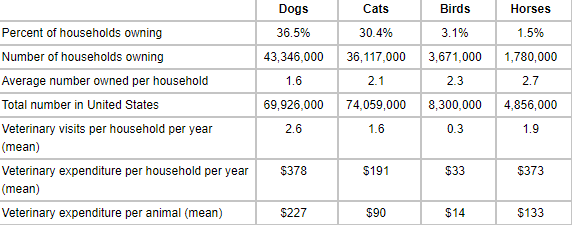
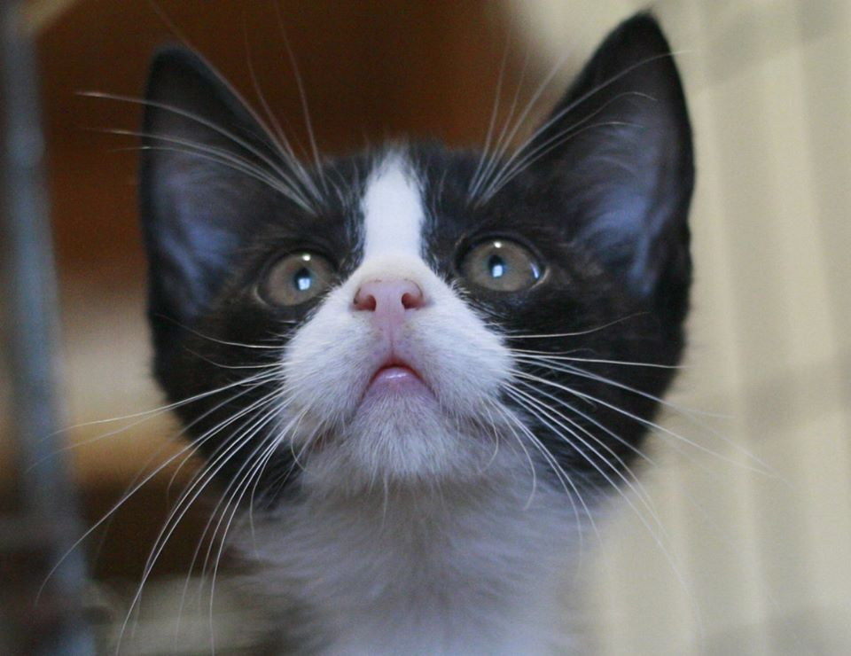
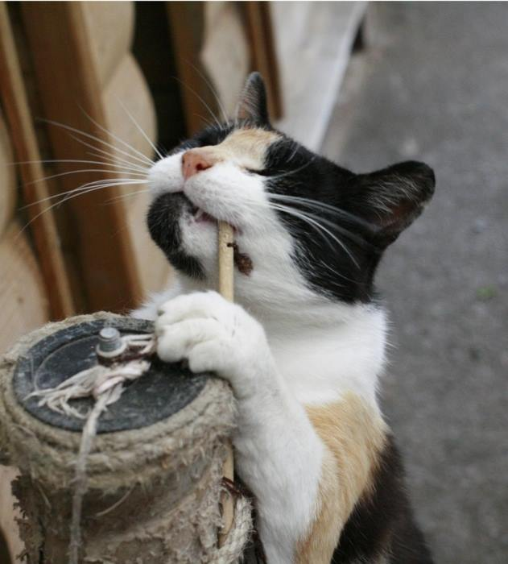
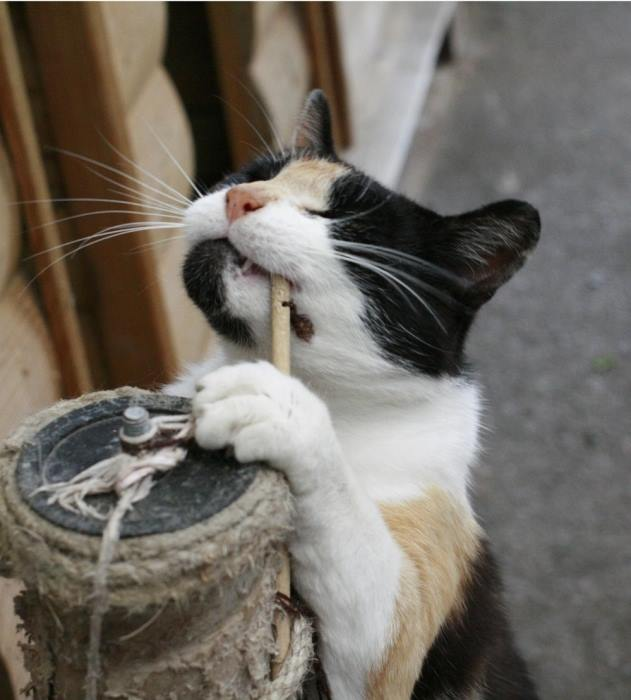
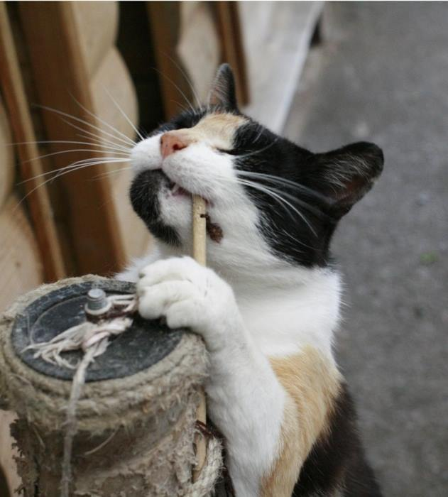

People love dogs and cats!
It's estimated that 78 million dogs and 85.8 million cats are owned in the United States. Approximately 44% of all households in the United States have a dog, and 35% have a cat.

Millions of dogs and cats in shelters
Millions of dogs and cats in shelters
Currently worldwide there are millions of dogs in dog shelters. Abandoned, waiting for their rescuers. They are viewed as less worthly, inperfect and unwanted animals.
Approximately 6.5 million companion animals enter U.S. animal shelters nationwide every year. Of those, approximately 3.3 million are dogs and 3.2 million are cats.
Each year, approximately 1.5 million shelter animals are euthanized (670,000 dogs and 860,000 cats).
Health benefits of having a pet
Studies have shown that the bond between people and their pets can increase fitness, lower stress, and bring happiness to their owners. Some of the health benefits of having a pet include:
- Decreased blood pressure
- Decreased cholesterol levels
- Decreased triglyceride levels
- Decreased feelings of loneliness
- Increased opportunities for exercise and outdoor activities
- Increased opportunities for socialization

 

